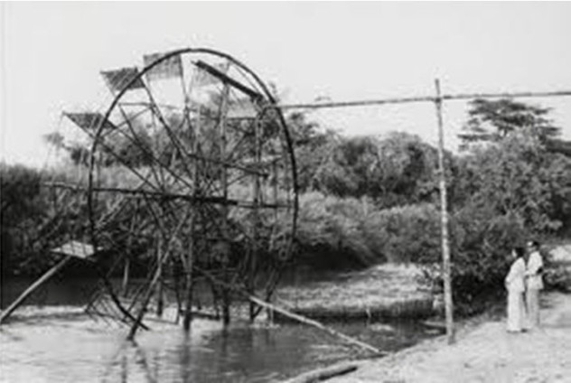

กังหันน้ำชัยพัฒนา หรือเครื่องกลเติมอากาศที่ผิวน้ำหมุนช้าแบบทุ่นลอย (Chaipattana Low Speed Surface Aerator) ซึ่งเป็น Model RX-2 หมายถึง Royal Experiment แบบที่ 2 มีคุณสมบัติในการถ่ายเทออกซิเจนได้สูงถึง 1.2 กิโลกรัมของออกซิเจน/แรงม้า/ชั่วโมง สามารถนำไปใช้ในกิจกรรมปรับปรุงคุณภาพน้ำได้อย่างอเนกประสงค์ ติดตั้งง่าย เหมาะสำหรับใช้ในแหล่งน้ำธรรมชาติ ได้แก่ สระน้ำ หนองน้ำ คลอง บึง ลำห้วย ฯลฯ ที่มีความลึกมากกว่า 1.00 เมตร และมีความกว้างมากกว่า 3.00 เมตร
ความเสื่อมโทรมของสภาพแวดล้อมที่เกิดขึ้นในปัจจุบันนี้ เป็นผลมาจากภาวะมลพิษของน้ำเน่าเสียที่มีปริมาณสูงขึ้นจนยากแก่การแก้ไขให้บรรเทาเบาบางลงได้ ส่งผลต่อสุขภาพอนามัยของพสกนิกรทั้งหลาย พระบาทสมเด็จพระเจ้าอยู่หัวฯทรงห่วงใยในความเดือดร้อนทุกข์ยากที่เกิดขึ้นนี้ ได้เสด็จพระราชดำเนินทอดพระเนตรสภาพน้ำเน่าเสียในพื้นที่หลายแห่งหลายครั้ง ทั้งในเขตกรุงเทพมหานคร ปริมณฑล และต่างจังหวัด พร้อมทั้งพระราชทานพระราชดำริเกี่ยวกับการแก้ไขปัญหาน้ำเน่าเสีย การนี้ จึงทรงพระกรุณาโปรดเกล้าฯ ให้มูลนิธิชัยพัฒนาสนับสนุนงบประมาณ เพื่อการศึกษาและวิจัยสิ่งประดิษฐ์ใหม่นี้ โดยดำเนินการจัดสร้างเครื่องมือบำบัดน้ำเสียร่วมกับกรมชลประทาน ซึ่งได้มีการผลิตเครื่องกลเติมอากาศขึ้นในเวลาต่อมา และรู้จักกันแพร่หลายทั่วประเทศในปัจจุบัน คือ "กังหันน้ำชัยพัฒนา"
ในระยะแรกระหว่างปี พ.ศ.2527-2530 ทรงแนะนำให้ใช้น้ำที่มีคุณภาพดีช่วยบรรเทาน้ำเสียและวิธีกรองน้ำเสียด้วยผักตบชวาและพืชน้ำต่างๆ มีอัตราแนวโน้มรุนแรงมากยิ่งขึ้น การใช้วิธีธรรมชาติไม่อาจบรรเทาความเน่าเสียของน้ำอย่างมีประสิทธิภาพเท่าที่ควร พระบาทสมเด็จพระเจ้าอยู่หัวฯ จึงพระราชทานพระราชดำริให้ประดิษฐ์เครื่องกลเติมอากาศแบบประหยัดค่าใช้จ่าย สามารถผลิตเองได้ในประเทศ ซึ่งมีรูปแบบ "ไทยทำไทยใช้" โดยทรงได้แนวทางจาก "หลุก" ซึ่งเป็นอุปกรณ์วิดน้ำเข้านาอันเป็นภูมิปัญญาชาวบ้านเป็นจุดคิดค้นเบื้องต้น และทรงมุ่งหวังที่จะช่วยแบ่งเบาภาระของรัฐบาลในการบรรเทาน้ำเน่าเสียอีกทางหนึ่งด้วย การนี้ จึงทรงพระกรุณาโปรดเกล้าฯ ให้มูลนิธิชัยพัฒนาสนับสนุนงบประมาณ เพื่อการศึกษาและวิจัยสิ่งประดิษฐ์ใหม่นี้ โดยดำเนินการจัดสร้างเครื่องมือบำบัดน้ำเสียร่วมกับกรมชลประทาน ซึ่งได้มีการผลิตเครื่องกลเติมอากาศขึ้นในเวลาต่อมา และรู้จักกันแพร่หลายทั่วประเทศในปัจจุบัน คือ "กังหันน้ำชัยพัฒนา"

มูลนิธิชัยพัฒนา
https://www.chaipat.or.th/